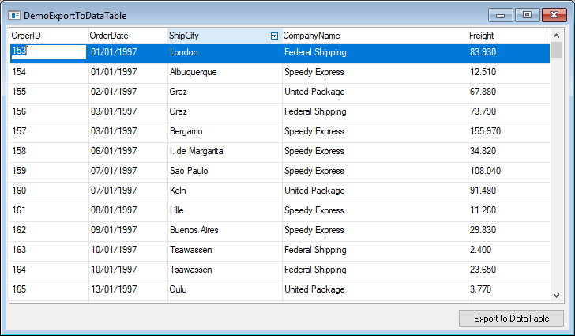
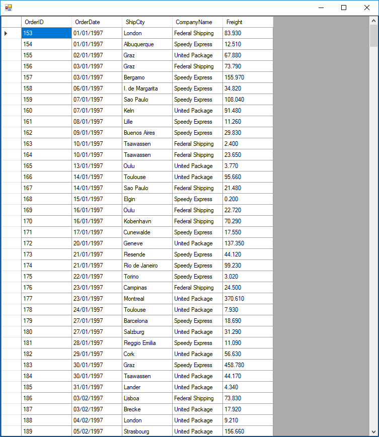

There are many data controls in .NET that use a DataTable as their data source. This article explains how to export the current data view to a DataTable, which can be used to display the data in any .NET control such as the DataGridView or DevExpress controls.
Assuming we have a UIController with a filtered list of orders: 
We want to display the data in a DataGridView control from the System.Windows.Forms namespace: 
Here is the code sample to export the current data view to a DataTable:
internal void ExportToDataTable()
{
var dtb = new DataTableBuilder();
GridExports.ExportToDataTableBuilder(this._uiController, () =>
{
var f = new System.Windows.Forms.Form();
var gv = new DataGridView
{
Dock = DockStyle.Fill,
DataSource = dtb.Result
};
f.Controls.Add(gv);
f.ShowDialog();
}, dtb);
} Notice that this._uiController is a member of ENV.AbstractUIController class, which is not accessible by default. If you want to make it available to any UIController, just add the protected access modifier to it:
public abstract class AbstractUIController : ControllerBase
{
protected internal UIController _uiController;